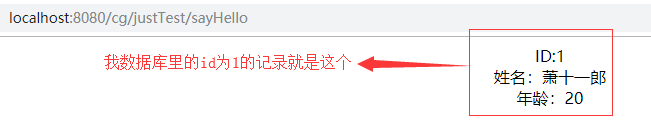

Mybatis整合Spring

文章目录
介绍
Mybatis是一款持久层的框架，使用Mybatis我们无需自己编写繁琐的JDBC代码，也无需为sql注入等安全问题烦恼。没用过Hibernate哈哈哈，无法做比较。好像现在市面上都是用Mybatis了叭=-=
然后为了方便之后写一些Mybatis相关的demo，首先需要搭建好能够运行Mybatis的环境，接下来就是结合Spring来搭建Mybatis的过程。
开发环境
- IDEA下的Maven项目
- JDK 1.8_0211
- Tomcat 8.5.38
- Mybatis 1.3.2
项目依赖
下面的Maven的依赖配置是一个完整的ssm依赖配置。包括了之后会用得到的Gjson和log4j等。此外，注意我的pom.xml在build里配置了一个resources ，代表我的src/main/java路径下的xml文件也会被认作项目的资源文件（否则利用Mybatis的扫描方式配置的mapper将不起作用 ），pom.xml配置如下：
1 2 3 4 5 6 7 8 9 10 11 12 13 14 15 16 17 18 19 20 21 22 23 24 25 26 27 28 29 30 31 32 33 34 35 36 37 38 39 40 41 42 43 44 45 46 47 48 49 50 51 52 53 54 55 56 57 58 59 60 61 62 63 64 65 66 67 68 69 70 71 72 73 74 75 76 77 78 79 80 81 82 83 84 85 86 87 88 89 90 91 92 93 94 95 96 97 98 99 100 101 102 103 104 105 106 107 108 109 110 111 112 113 114 115 116 117 118 119 120 121 122 123 124 125 126 127 128 129 130 131 132 133 134 135 136 137 138 139 140 141 142 143 144 145 146 147 148 149 150 151 152 153 154 155 156 157 158 159 160 161 162 163 164 165 166 167 168 169 170 171 172 173 174 175 176 177 178 179 180 181 182 183 184 185 186 187 188 189 190 191 192 193 194 195 196 197 198 199 200 201 202 203 204 205 206 207 208 209 210 211 212 213 214 215 216 217 218 219 220 221 |
<?xml version="1.0" encoding="UTF-8"?>
<project xmlns="http://maven.apache.org/POM/4.0.0" xmlns:xsi="http://www.w3.org/2001/XMLSchema-instance"
xsi:schemaLocation="http://maven.apache.org/POM/4.0.0 http://maven.apache.org/xsd/maven-4.0.0.xsd">
<modelVersion>4.0.0</modelVersion>
<groupId>com.company.struct</groupId>
<artifactId>artifact</artifactId>
<version>1.0-SNAPSHOT</version>
<packaging>war</packaging>
<name>artifact Maven Webapp</name>
<!-- FIXME change it to the project's website -->
<url>http://www.example.com</url>
<properties>
<project.build.sourceEncoding>UTF-8</project.build.sourceEncoding>
<maven.compiler.source>1.7</maven.compiler.source>
<maven.compiler.target>1.7</maven.compiler.target>
<!-- spring的版本 -->
<spring.version>5.1.5.RELEASE</spring.version>
<!-- mybatis的版本 -->
<mybatis.version>3.4.6</mybatis.version>
<!-- mybatis/spring包 -->
<mybatis-spring.version>1.3.2</mybatis-spring.version>
<!-- servlet核心包 -->
<servlet-api.version>4.0.1</servlet-api.version>
<!-- slf4j日志文件管理包版本 -->
<slf4j.version>1.7.1</slf4j.version>
</properties>
<!-- 各种依赖包-->
<dependencies>
<dependency>
<groupId>junit</groupId>
<artifactId>junit</artifactId>
<version>4.11</version>
<!-- 表示开发的时候引入，发布的时候不会加载此包 -->
<scope>test</scope>
</dependency>
<!--spring核心包-->
<dependency>
<groupId>org.springframework</groupId>
<artifactId>spring-context</artifactId>
<version>${spring.version}</version>
</dependency>
<dependency>
<groupId>org.springframework</groupId>
<artifactId>spring-core</artifactId>
<version>${spring.version}</version>
</dependency>
<dependency>
<groupId>org.springframework</groupId>
<artifactId>spring-beans</artifactId>
<version>${spring.version}</version>
</dependency>
<dependency>
<groupId>org.springframework</groupId>
<artifactId>spring-context-support</artifactId>
<version>${spring.version}</version>
</dependency>
<dependency>
<groupId>org.springframework</groupId>
<artifactId>spring-aop</artifactId>
<version>${spring.version}</version>
</dependency>
<dependency>
<groupId>org.springframework</groupId>
<artifactId>spring-aspects</artifactId>
<version>${spring.version}</version>
</dependency>
<dependency>
<groupId>org.springframework</groupId>
<artifactId>spring-expression</artifactId>
<version>${spring.version}</version>
</dependency>
<dependency>
<groupId>org.springframework</groupId>
<artifactId>spring-jdbc</artifactId>
<version>${spring.version}</version>
</dependency>
<dependency>
<groupId>org.springframework</groupId>
<artifactId>spring-orm</artifactId>
<version>${spring.version}</version>
</dependency>
<dependency>
<groupId>org.springframework</groupId>
<artifactId>spring-tx</artifactId>
<version>${spring.version}</version>
</dependency>
<dependency>
<groupId>org.springframework</groupId>
<artifactId>spring-web</artifactId>
<version>${spring.version}</version>
</dependency>
<dependency>
<groupId>org.springframework</groupId>
<artifactId>spring-webmvc</artifactId>
<version>${spring.version}</version>
</dependency>
<!--mybatis包-->
<dependency>
<groupId>org.mybatis</groupId>
<artifactId>mybatis</artifactId>
<version>${mybatis.version}</version>
</dependency>
<!-- mybatis/spring包 -->
<dependency>
<groupId>org.mybatis</groupId>
<artifactId>mybatis-spring</artifactId>
<version>${mybatis-spring.version}</version>
</dependency>
<!-- mysql数据库 -->
<dependency>
<groupId>mysql</groupId>
<artifactId>mysql-connector-java</artifactId>
<version>8.0.11</version>
</dependency>
<!-- 添加servlet核心包 -->
<dependency>
<groupId>javax.servlet</groupId>
<artifactId>javax.servlet-api</artifactId>
<scope>provided</scope>
<version>${servlet-api.version}</version>
</dependency>
<!--配置Gson-->
<dependency>
<groupId>com.google.code.gson</groupId>
<artifactId>gson</artifactId>
<version>2.3.1</version>
</dependency>
<!--数据库连接池druid -->
<dependency>
<groupId>com.alibaba</groupId>
<artifactId>druid</artifactId>
<version>1.0.24</version>
</dependency>
<!--
日志文件管理包
slf4j-log4j12 是slf4j与日志log4j的整合jar包，
这个jar包会自动引入其log4j-1.2.17.jar的实现jar ，
因此项目中pom.xml引入slf4j-log4j12的依赖即可
-->
<dependency>
<groupId>org.slf4j</groupId>
<artifactId>slf4j-log4j12</artifactId>
<version>${slf4j.version}</version>
</dependency>
<!-- 引入jstl-->
<!-- 需要注意，有的web.xml版本会屏蔽El表达式，需要手动开启，或者web.xml中声明-->
<dependency>
<groupId>javax.servlet</groupId>
<artifactId>jstl</artifactId>
<version>1.2</version>
</dependency>
<dependency>
<groupId>taglibs</groupId>
<artifactId>standard</artifactId>
<version>1.1.2</version>
</dependency>
</dependencies>
<build>
<finalName>artifact</finalName>
<pluginManagement><!-- lock down plugins versions to avoid using Maven defaults (may be moved to parent pom) -->
<plugins>
<plugin>
<artifactId>maven-clean-plugin</artifactId>
<version>3.1.0</version>
</plugin>
<!-- see http://maven.apache.org/ref/current/maven-core/default-bindings.html#Plugin_bindings_for_war_packaging -->
<plugin>
<artifactId>maven-resources-plugin</artifactId>
<version>3.0.2</version>
</plugin>
<plugin>
<artifactId>maven-compiler-plugin</artifactId>
<version>3.8.0</version>
</plugin>
<plugin>
<artifactId>maven-surefire-plugin</artifactId>
<version>2.22.1</version>
</plugin>
<plugin>
<artifactId>maven-war-plugin</artifactId>
<version>3.2.2</version>
</plugin>
<plugin>
<artifactId>maven-install-plugin</artifactId>
<version>2.5.2</version>
</plugin>
<plugin>
<artifactId>maven-deploy-plugin</artifactId>
<version>2.8.2</version>
</plugin>
</plugins>
</pluginManagement>
<resources>
<resource>
<directory>src/main/java</directory>
<includes>
<include>**/*.xml</include>
</includes>
<filtering>true</filtering>
</resource>
</resources>
</build>
</project> |
过程
配置web.xml
在web.xml里配置Spring的配置文件路径，这里使用了通配符*，意思是加载所有以applicationContext开头的xml文件，配置如下：
1 2 3 4 5 6 7 8 |
<!-- 加载spring容器 -->
<context-param>
<param-name>contextConfigLocation</param-name>
<param-value>classpath:spring/applicationContext*.xml</param-value>
</context-param>
<listener>
<listener-class>org.springframework.web.context.ContextLoaderListener</listener-class>
</listener> |
配置Spring管理的Mybatis
前面配置了Spring的xml的加载路径，现在就是创建一个Spring的xml，叫做applicationContextDao.xml，位于资源路径下的spring路径下。配置如下：
1 2 3 4 5 6 7 8 9 10 11 12 13 14 15 16 17 18 19 20 21 22 23 24 25 26 27 28 29 30 31 32 33 34 35 36 37 38 39 40 41 42 43 44 45 46 47 48 49 50 51 52 53 54 55 56 57 58 59 60 61 62 63 64 65 66 67 68 69 70 71 72 73 74 75 76 77 78 79 80 81 82 83 84 |
<?xml version="1.0" encoding="UTF-8"?>
<beans xmlns="http://www.springframework.org/schema/beans"
xmlns:xsi="http://www.w3.org/2001/XMLSchema-instance"
xmlns:context="http://www.springframework.org/schema/context"
xsi:schemaLocation="http://www.springframework.org/schema/beans http://www.springframework.org/schema/beans/spring-beans.xsd http://www.springframework.org/schema/context http://www.springframework.org/schema/context/spring-context.xsd">
<!-- 加载数据库连接池DRUID的配置文件 -->
<context:property-placeholder location="classpath:properties/db.properties"/>
<!-- 数据库连接池 -->
<!-- 数据源 -->
<bean id="dataSource" class="com.alibaba.druid.pool.DruidDataSource" init-method="init" destroy-method="close">
<!-- 基本属性 url、user、password -->
<property name="driverClassName" value="${jdbc.driverClassName}"/>
<property name="url" value="${jdbc.url}"/>
<property name="username" value="${jdbc.username}"/>
<property name="password" value="${jdbc.password}"/>
<!-- 配置初始化大小、最小、最大 -->
<property name="initialSize" value="${druid.initialSize}"/>
<property name="minIdle" value="${druid.minIdle}"/>
<property name="maxActive" value="${druid.maxActive}"/>
<!-- 配置获取连接等待超时的时间 -->
<property name="maxWait" value="${druid.maxWait}"/>
<!-- 配置间隔多久才进行一次检测，检测需要关闭的空闲连接，单位是毫秒 -->
<property name="timeBetweenEvictionRunsMillis" value="${druid.timeBetweenEvictionRunsMillis}"/>
<!-- 配置一个连接在池中最小生存的时间，单位是毫秒 -->
<property name="minEvictableIdleTimeMillis" value="${druid.minEvictableIdleTimeMillis}"/>
<property name="validationQuery" value="${druid.validationQuery}"/>
<property name="testWhileIdle" value="${druid.testWhileIdle}"/>
<property name="testOnBorrow" value="${druid.testOnBorrow}"/>
<property name="testOnReturn" value="${druid.testOnReturn}"/>
<!-- 打开PSCache，并且指定每个连接上PSCache的大小 如果用Oracle，则把poolPreparedStatements配置为true，mysql可以配置为false。-->
<property name="poolPreparedStatements" value="${druid.poolPreparedStatements}"/>
<property name="maxPoolPreparedStatementPerConnectionSize"
value="${druid.maxPoolPreparedStatementPerConnectionSize}"/>
<!-- 配置监控统计拦截的filters -->
<property name="filters" value="${druid.filters}"/>
<!-- Start 慢sql监控及log4j设置-->
<!-- <property name="proxyFilters">-->
<!-- <list>-->
<!-- <ref bean="stat-filter"/>-->
<!-- <ref bean="log-filter"/>-->
<!-- </list>-->
<!-- </property>-->
<!-- End 慢sql监控及log4j设置,不想监控的话将proxyFilters属性删除即可 -->
</bean>
<!--日志记录-->
<bean id="log-filter" class="com.alibaba.druid.filter.logging.Log4jFilter">
<property name="dataSourceLogEnabled" value="true" />
<property name="statementExecutableSqlLogEnable" value="true" />
</bean>
<!-- 配置mybatis的sqlSessionFactory -->
<bean id="sqlSessionFactory" class="org.mybatis.spring.SqlSessionFactoryBean">
<!-- 数据库连接池 -->
<property name="dataSource" ref="dataSource" />
<!-- 加载mybatis的全局配置文件 -->
<property name="configLocation" value="classpath:mybatis/sqlMapConfig.xml" />
</bean>
<!-- 配置mybatis的mapper扫描器 -->
<!-- mapper批量扫描，从mapper包中扫描出mapper接口，自动创建代理对象并且在spring容器中注册
遵循规范：将mapper.java和mapper.xml映射文件名称保持一致，且在一个目录 中
自动扫描出来的mapper的bean的id为mapper类名（首字母小写）
-->
<bean class="org.mybatis.spring.mapper.MapperScannerConfigurer">
<property name="basePackage" value="com.test.ssm.mapper"></property>
<property name="sqlSessionFactoryBeanName" value="sqlSessionFactory"/>
</bean>
<!-- <context:component-scan base-package="com.test.ssm"/>-->
</beans> |
Notice: 我使用的数据库连接池为阿里的DRUID，日志框架为log4j，数据库连接池的配置文件位于资源路径下的properties/db.properties，配置的mybatis的全局配置文件位于资源路径下的mybatis/sqlMapConfig.xml。然后我使用的是mybatis的扫描方式配置mapper，扫描的包是com.test.ssm.mapper。此外的两个坑：如果不配置Spring的组件扫描，将不能再Controller里自动注入标注了@Service的组件；mysql8需要指定数据库驱动为com.mysql.cj.jdbc.Driver，并且需要设定时区 关于db.properties的配置，就是需要注意mysql高版本需要配置driverClassName。sqlMapConfig.xml我暂时还没写具体的配置。db.properties配置如下：
1 2 3 4 5 6 7 8 9 10 11 12 13 14 15 16 17 18 19 20 |
# database configure jdbc.driverClassName=com.mysql.cj.jdbc.Driver jdbc.url=jdbc:mysql://localhost:3306/ssm?useUnicode=true&characterEncoding=utf8&useSSL=false&serverTimezone=Hongkong jdbc.username=root jdbc.password=123456 # druid datasource druid.initialSize=10 druid.minIdle=10 druid.maxActive=50 druid.maxWait=60000 druid.timeBetweenEvictionRunsMillis=60000 druid.minEvictableIdleTimeMillis=300000 druid.validationQuery=SELECT 1 druid.testWhileIdle=true druid.testOnBorrow=false druid.testOnReturn=false druid.poolPreparedStatements=false druid.maxPoolPreparedStatementPerConnectionSize=20 druid.filters=wall,stat |
测试
- 在包com.test.ssm.pojo里创建一个实体类User(properties:String name,int age,int id)
- 在包com.test.ssm.mapper里创建一个mapper，叫UserMapper.java
- 在包com.test.ssm.mapper里创建mapper.xml，叫UserMapper.xml
- 在包com.test.ssm.service里创建一个UserService.java
- 在包com.test.ssm.service.implement里创建一个UserServiceImpl.java
- 在包com.test.ssm.web.controller里创建一个控制器，叫TestController.java
Notice: 我的数据库ssm里有一个叫user的表，其列和User实体的属性对应。然后就是我配置了Spring的组件扫描，扫描整个com.test.ssm。我配置在其他的文件中，没有贴出来，applicationContextDao.xml里最后的<context:component-scan base-package="com.test.ssm"/>就是组件扫描，只不过我配置在了其他地方所以注释了此行。
步骤1的代码：
1 2 3 4 5 6 7 8 9 10 11 12 13 14 15 16 17 18 19 20 21 22 23 24 25 26 27 28 |
package com.test.ssm.pojo; public class User { private String name; private int age; private int id; public int getId() { return id; } public String getName() { return name; } public int getAge() { return age; } @Override public String toString() { return "User{" + "id=" + id + ", name='" + name + '\'' + ", age=" + age + '}'; } } |
步骤2的代码：
1 2 3 4 5 |
package com.test.ssm.mapper; import com.test.ssm.pojo.User; public interface UserMapper { public User findUserById(int id) throws Exception; } |
步骤3的代码：
1 2 3 4 5 6 7 8 9 10 11 12 |
<?xml version="1.0" encoding="UTF-8" ?>
<!DOCTYPE mapper
PUBLIC "-//mybatis.org//DTD Mapper 3.0//EN"
"http://mybatis.org/dtd/mybatis-3-mapper.dtd">
<mapper namespace="com.test.ssm.mapper.UserMapper">
<!-- 查询用户信息 -->
<select id="findUserById" parameterType="java.lang.Integer" resultType="com.test.ssm.pojo.User">
select * from user where id=#{id}
</select>
</mapper> |
步骤4的代码：
1 2 3 4 5 |
package com.test.ssm.service; import com.test.ssm.pojo.User; public interface UserService { public User findUserById(int id) throws Exception; } |
步骤5的代码：
1 2 3 4 5 6 7 8 9 10 11 12 13 14 15 16 17 |
package com.test.ssm.service.implement; import com.test.ssm.mapper.UserMapper; import com.test.ssm.pojo.User; import com.test.ssm.service.UserService; import org.springframework.beans.factory.annotation.Autowired; import org.springframework.stereotype.Service; @Service public class UserServiceImpl implements UserService { @Autowired private UserMapper userMapper; @Override public User findUserById(int id) throws Exception { //System.out.println("实现类！"); return userMapper.findUserById(id); } } |
步骤6的代码：
1 2 3 4 5 6 7 8 9 10 11 12 13 14 15 16 17 18 19 20 21 22 23 24 |
package com.test.ssm.web.controller; import com.test.ssm.pojo.User; import com.test.ssm.service.UserService; import org.springframework.beans.factory.annotation.Autowired; import org.springframework.stereotype.Controller; import org.springframework.ui.Model; import org.springframework.web.bind.annotation.RequestMapping; @Controller @RequestMapping("justTest") public class TestController{ @Autowired private UserService userService; @RequestMapping("sayHello") public String sayHello(Model model){ try { User a=userService.findUserById(1); model.addAttribute("user",a); } catch (Exception e) { e.printStackTrace(); } return "hello"; } } |
hello视图的代码：
1 2 3 4 5 6 7 8 9 10 11 12 13 14 15 16 |
<%@ page contentType="text/html;charset=UTF-8" language="java" %>
<%@ taglib uri="http://java.sun.com/jsp/jstl/core" prefix="c"%>
<%@ page isELIgnored="false"%>
<html>
<head>
<title>hello World</title>
</head>
<body>
<center>
ID:${user.id}<br/>
姓名：${user.name}<br/>
年龄：${user.age}<br/>
</center>
</body>
</html> |
访问测试结果：

文章作者 P1n93r
上次更新 2019-07-10